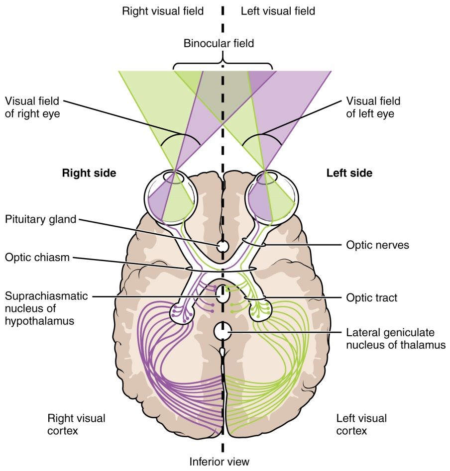
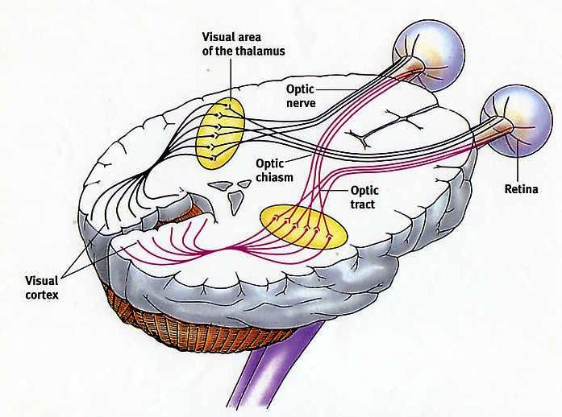

Primary sensory cortex
Each sensory system has a primary cortical area.
These areas:
- Serve as the
entry pointfor cortical processing
- Receive
organizedsensory input
- Preserve
spatial relationships
Damage here produces
modality-specificdeficits.

Module 1 - Sensory Systems
Each sensory system has a primary cortical area.
These areas:
entry point for cortical processingorganized sensory inputspatial relationshipsDamage here produces
modality-specificdeficits.
Perception does not arise in a single area.
Sensory information is processed across:
Perception is an
emergent propertyof distributed networks.

The visual system responds to electromagnetic radiation in the visible spectrum.
Key properties of light include:
WavelengthIntensityThese properties are transformed into neural signals by the retina.
A ‘sensory window’ is the part of a physical dimension that a biological system can detect. What lies outside the window is not perceived, but it still exists. Human vision : Sensitive roughly to wavelengths between ~400 nm (violet) and ~700 nm (red)


Light enters the eye through several structures:
The Retina is organized in layers. Light passes through several cell layers before reaching photoreceptors. Neural processing begins within the retina itself.


Photoreceptors are specialized cells that respond to light.
There are two main types:
Rods are highly sensitive to light. They are specialized for:
Low-light conditions (Night vision - Scotopic)No color informationCones are less sensitive to light. They are specialized for:
Humans typically have 3 cone types.

The fovea is a small region near the center of the retina. It contains a high density of cones. It provides the highest visual acuity.
In addition to photoreceptors, the retina contains:
Bipolar cellsHorizontal cellsAmacrine cellsGanglion cellsThese cells shape and refine visual signals.
The axons of ganglion cells form the optic nerve.
This nerve carries visual information to the brain.
Where the optic nerve exits the retina, there are no photoreceptors. This creates the blind spot.


Retinal ganglion cells are the
outputneurons of the retina. They receive input indirectly from photoreceptors through bipolar and amacrine cells. Their axons form theoptic nerve.
Retinal ganglion cell receptive fields are circular and organized into [2 regions]:
central regionsurrounding regionLight affects these regions in opposite ways.


In ON-center ganglion cells:
They respond best to a bright spot on a darker background.

In OFF-center ganglion cells:
They respond best to a dark spot on a brighter background.

Visual acuity refers to the ability to resolve fine spatial detail.
Visual acuity is constrained by multiple factors:
Acuity is highest in the fovea and decreases toward the periphery.
Eye movementscontinuously place objects of interest onto high-acuity regions (Fovea).

Beyond the chiasm, axons continue as the optic tract. Most optic tract fibers synapse in the thalamus. This relay is obligatory for conscious vision.
Visual information synapses in the lateral geniculate nucleus (LGN).
The LGN:
Preserves retinal organizationseparation of inputs (monocular)Modulates signal flow to cortex 
Neurons in V1 respond to
simple visual featuresand start integrating thebinocularinput.
Features encoded:
EdgesOrientationSpatial locationBinocularity from layer 2/3V1 extracts structure from retinal input.
 
Faces detection and recognition is a Holistic process. This means that faces are processed as integrated wholes.
A key region for face perception is the fusiform area of the temporal lobe.
It is involved in:
Recognizing individual facesDiscriminating subtle facial features
Damage to dorsal areas impairs:
In extreme cases, motion appears fragmented or absent.
Akinetopsia, or motion blindness, is a rare condition linked to dorsal stream damage.
Patients perceive the world as a sequence of static snapshots.
Motion information fails to integrate over time.

The sense of touch allows the nervous system to detect mechanical stimulation of the body. Touch is not a single sense. It is a collection of specialized channels working together.
It provides information about:
Touch is essential for interaction with the environment.

The somatosensory system includes multiple modalities:
These modalities are detected by different receptor types.
Touch begins at mechanoreceptors. These receptors convert mechanical forces into neural signals. Each type is tuned to specific stimulus properties.
Key mechanoreceptors in the skin include:
Meissner corpuscles
Sensitive to motion and light touch
Merkel cells
Detect edges and fine detail
Pacinian corpuscles
Detect vibration
Ruffini endings
Detect skin stretch

Pain processing involves multiple brain regions.
These include:
Pain has both sensory and emotional components.

Hearing allows the nervous system to detect and interpret sound. Sound is a
pattern of pressure waves in airfrom 20 Hz to 20 kHz. Perception arises from how these waves are transformed into neural signals.

Sound waves are characterized by:
pitchloudness.

Sensory transduction occurs in the Coorti organ, where
Hair Cellsconvert mechanical movement into electrical signals. They are truesensory receptors.
Movement of hair bundles opens mechanically gated ion channels.
This leads to:
Sound is now encoded neurally.


Interaural level differences arise from sound shadowing by the head. They are most informative for high-frequency sounds. These differences are computed in brainstem circuits.
The auditory system uses two main interaural cues:
time differences (due to speed of sound)amplitude differences (due to the acoustic shadow)Each cue is informative under different conditions.